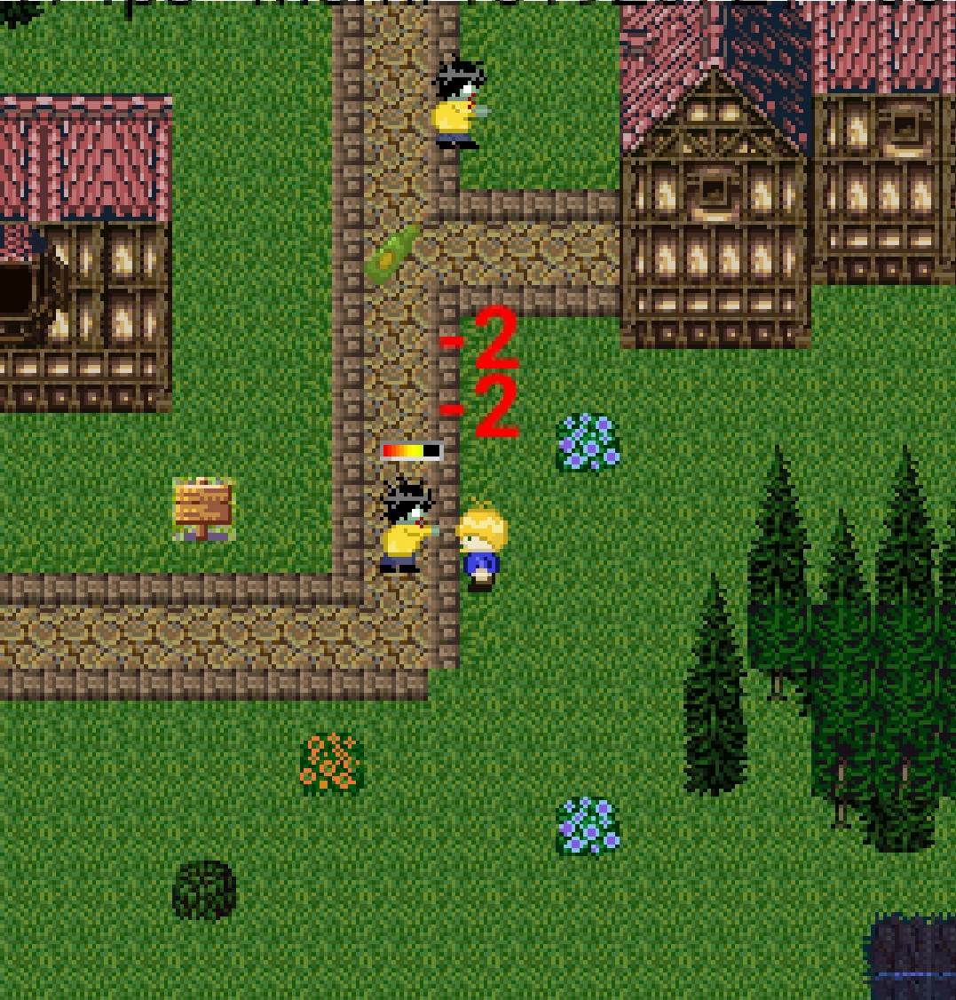
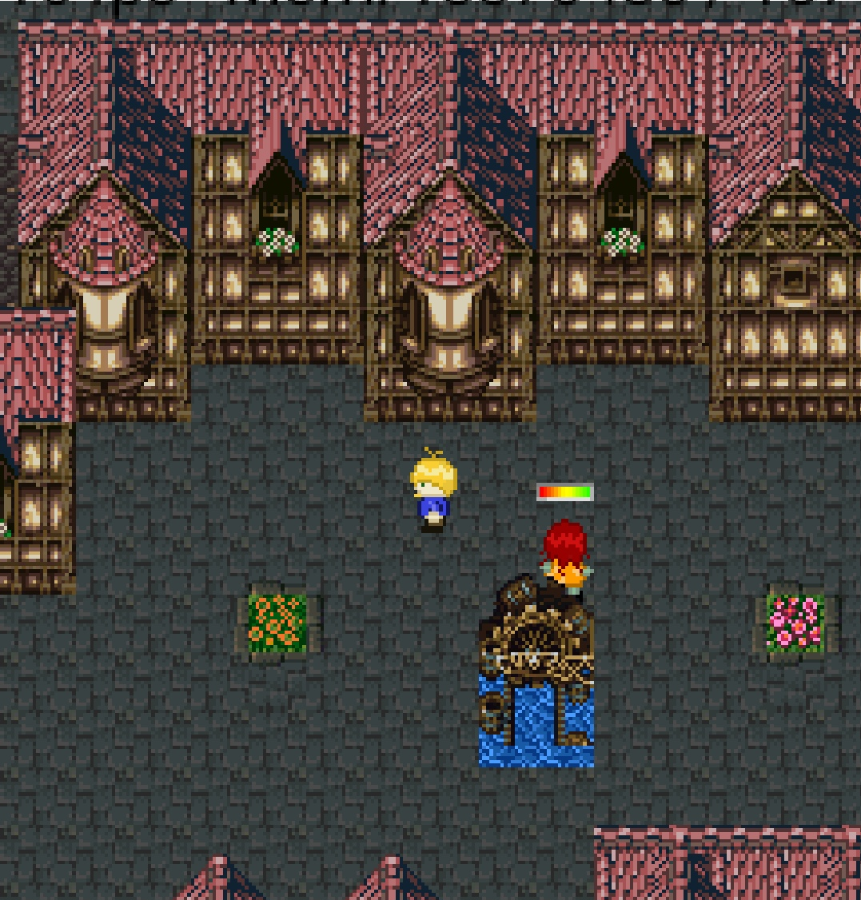
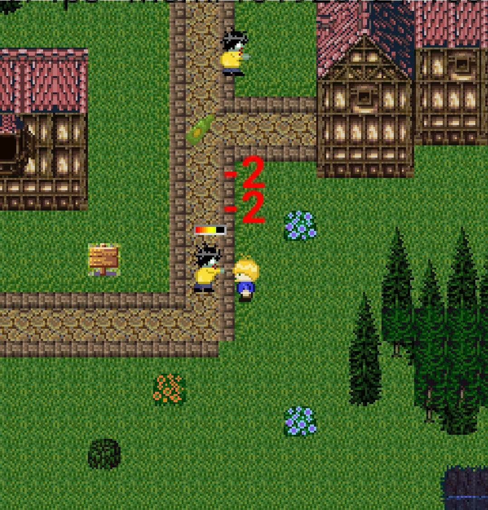
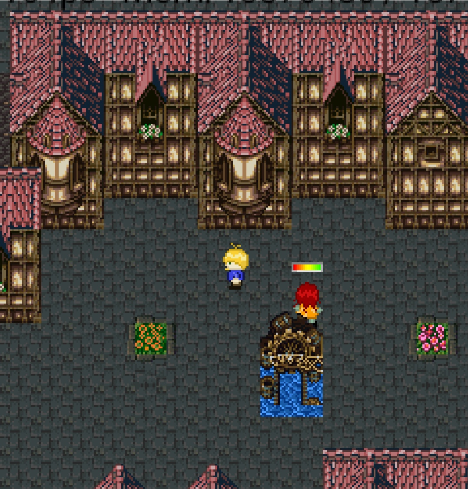
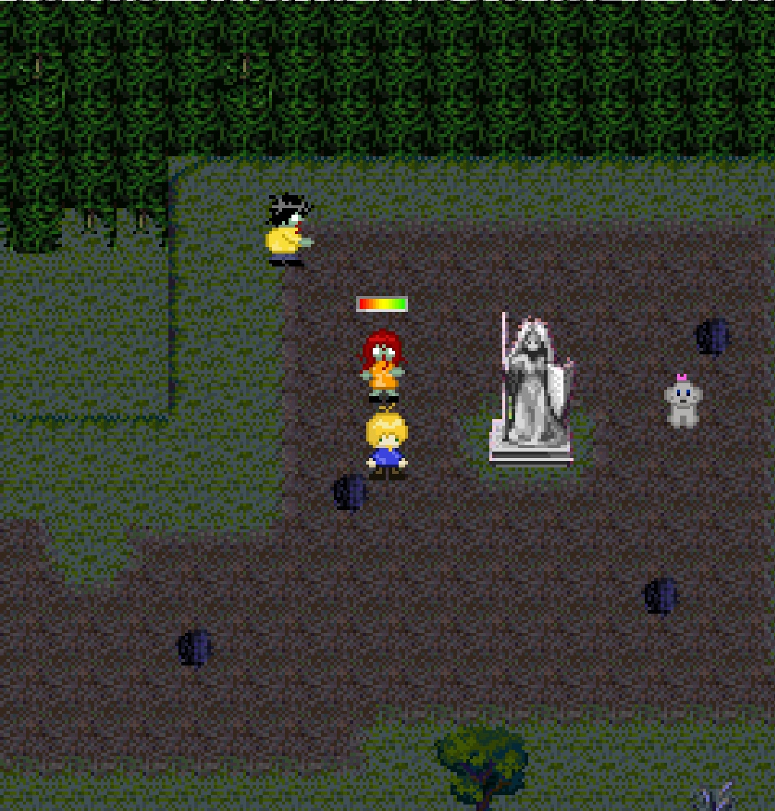
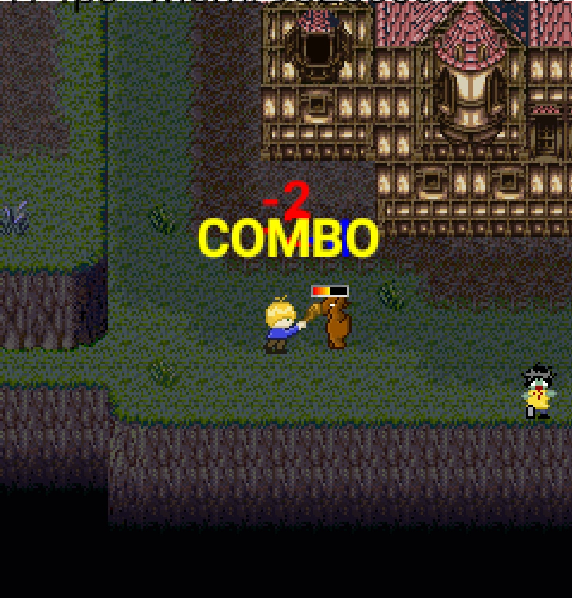
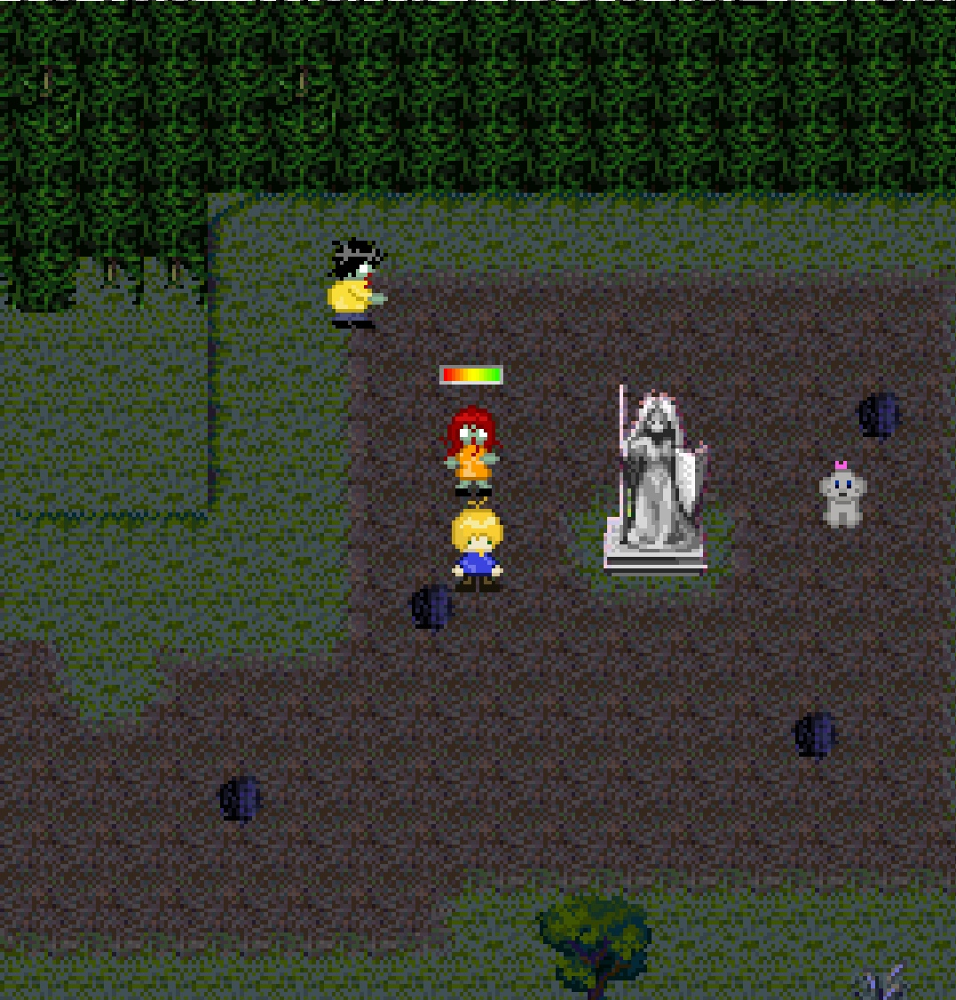
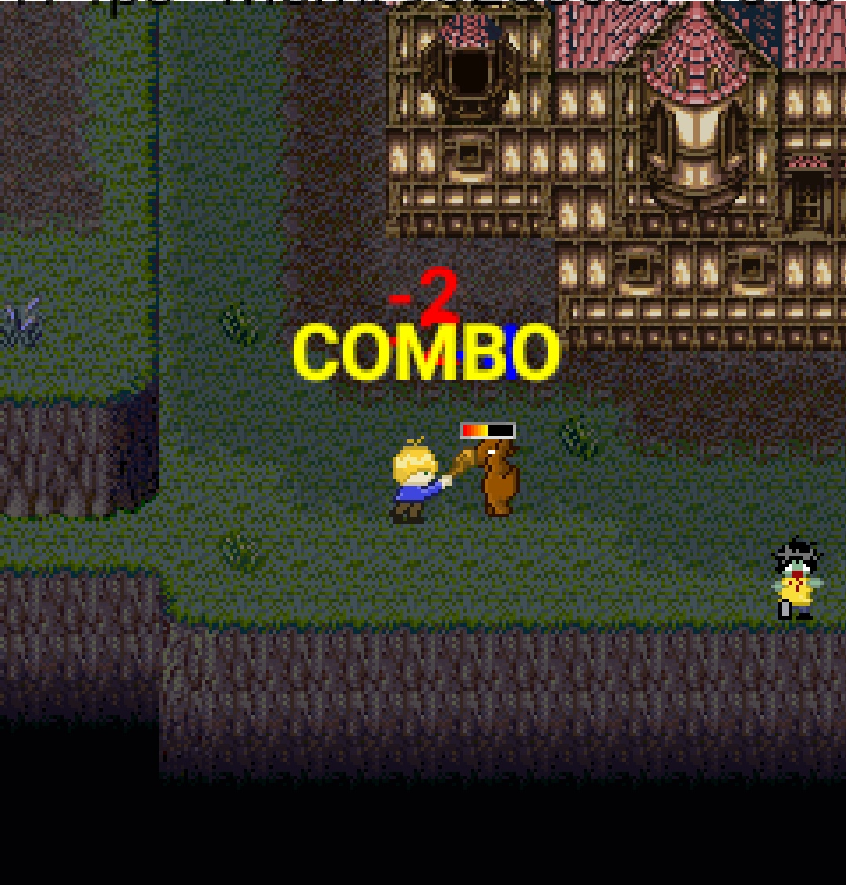
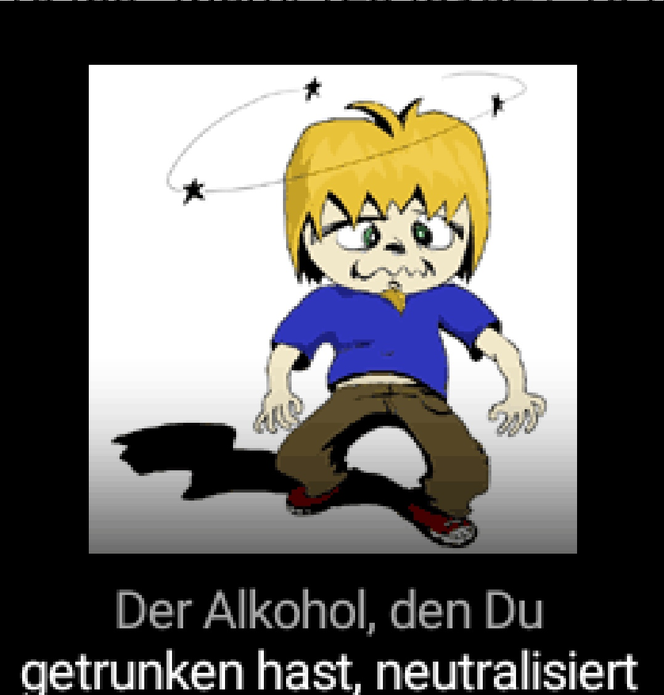
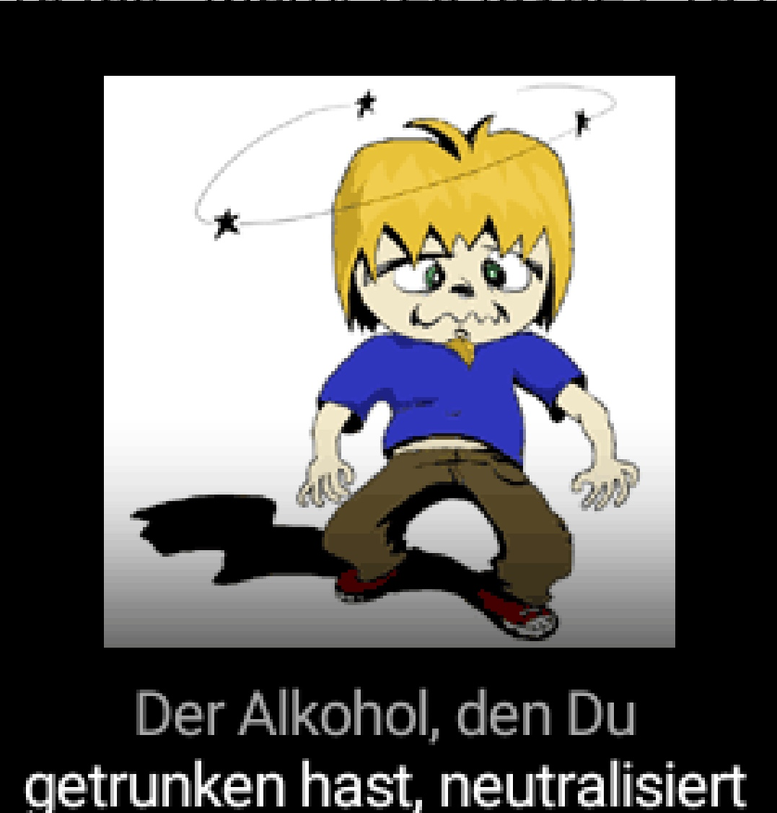

Chaos Campus
Dieses Spiel wurde von Studenten der Technischen Universität Braunschweig (TU‑BS) und der Hochschule für bildende Künste Braunschweig (HBK) entwickelt.
Auf dem Chaos Campus ist etwas tragisches passiert. Die böse Vizepräsidentin der Universität hat den Präsidenten gekidnappt und mit ihrem Giftnebel alle Studenten in Monster verwandelt. Nur du, Simon, wurdest auf mysteriöse Weise verschont. Also raus aus den Federn und ran an dein Lieblingsbuch "Cormenius". Nicht zum Lernen. Nein nein, dafür ist keine Zeit... Aber zum Monster kloppen eignet sich das "Nachschlagewerk" bestens. Nur so kannst du deine Kommilitonen retten. Ein paar Rätsel und Bosskämpfe warten auch auf dich.
Verfügbar auf Google Play und als jar-Datei für alte Handys aus der Generation vor den Smartphones. Die jar-Datei ist auch mit einem J2ME emulator (z.B. J2ME-Loader auf Android) ausführbar.
Google Play GitHub Download (jar)CREDITS
Chaos Campus
SEP Thema: ./javy - Das Handygame
Wer hat's gemacht?
Handygame
-----------
"Player" - Martin Fiebig
"HBK <-> TU" - Bettina Görtz
Bertille Kemgang
Claudia Latta
"The Riddler" - Sascha Lity
"BetaGirl" - Inga Lowin
"Enemy #1" - Malte Mauritz
Sandrine Mbelale
"GUI-GUY" - Jean Paul Tatou
"Cheffe" - Martin Wahnschaffe
"Loading..." - Christian Woizischke
Leveleditor
-------------
Alexandr Beresnev
"DocuMan" - Tobias Lange
"Undo-Master" - Markus Lorenz
"Läuft" - Florian Mätschke
"The Exporter" - Stefan Tobias
Richard Wolfer
Betreuung
-----------
"Die Don" - Brigitte Matthiak
"Weihnachtskinde" - Andrea Fricke (geb. Keil)
HBK
-----
Lena Ermgassen
Petra Popescu
Martin Hallmann
Julia Christians (geb. Henkel)
Yu Ning
Story
------
Sascha Lity
Tobias Lange
Vielen Dank an alle Tester und weiteren Helfer!

 




 




 
